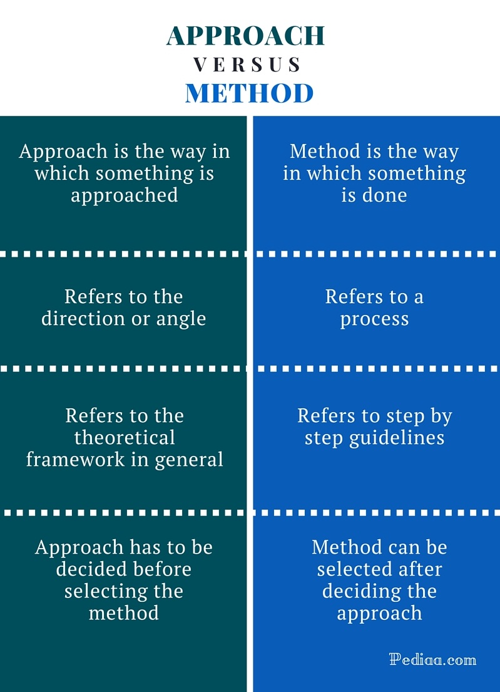

This post clarifies the difference between approach and method.
Source link: Pediaa
Main Difference – Approach vs Method
Approach and method are two important concepts in performing any task. These two factors can actually decide the success of your task.
Approach is the way you are going to approach the project.
Method is the way in which you are going to complete the project.
Above is the main difference between approach and method. These two meanings can be confusing since they are overlapping. But we hope you’ll get a clear understanding of these terms after reading this article.
What is an Approach
Approach is the way in which you are going to approach a project or task. It refers to the angle you are using or the direction you are going to take. There can be a more than one way to approach a task. In academic field, approach can refer to the theoretical framework you are going to use in a project.
For example, if a teacher gives her students a piece of literature, and ask them to write an analysis, there will be different approaches. Some students will approach the work by analyzing the language while some students will focus on themes. There will be others who approach the work through an analysis of structure.
Similarly, in analyzing a work of literature, students will use different angles and theories. For example, Jean Rhys’ Wide Sargasso Sea can be approached by using postcolonial theories or feminist theories; a combination of the two theories can also be used.
Once you have decided how you are going to approach the task, you can decide the methods you are going to use.
What is a Method
Method is the way in which something is done. Method is always organized, structured and systematic. It can refer to a step by step description of tasks to be completed in order to perform a task. For example, if you are writing a critical essay on a novel, method would be the areas you are going to analyze and the way in which you analyze. If you are conducting research, method is the way in which you gather data and analyze them. Method basically explains how to do something and how something is done.
If we are looking at a mathematical problem, the basic theory, formula we are going to use will be the approach. The step by step way which we use to solve the problem is our method.
